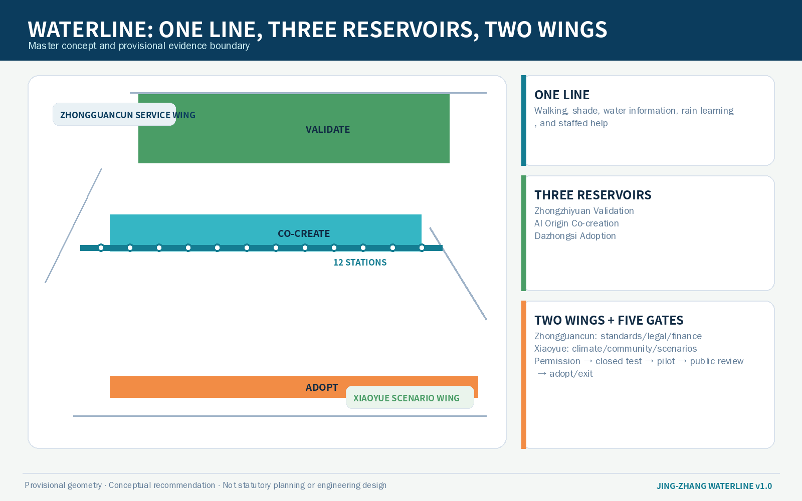
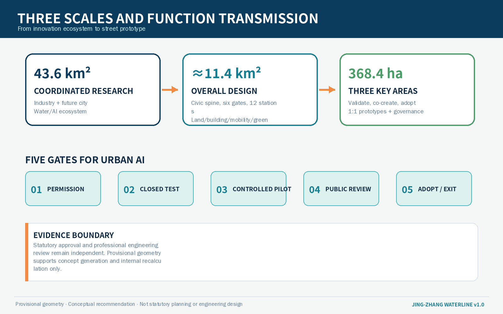
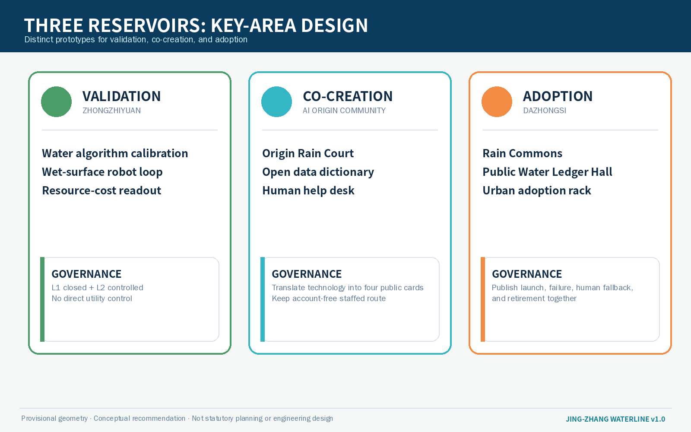
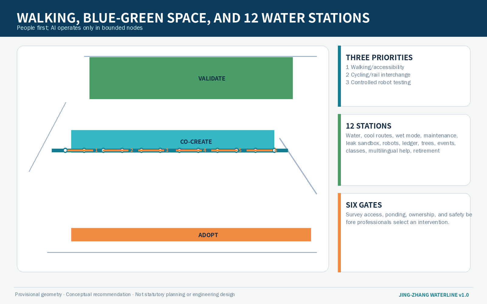
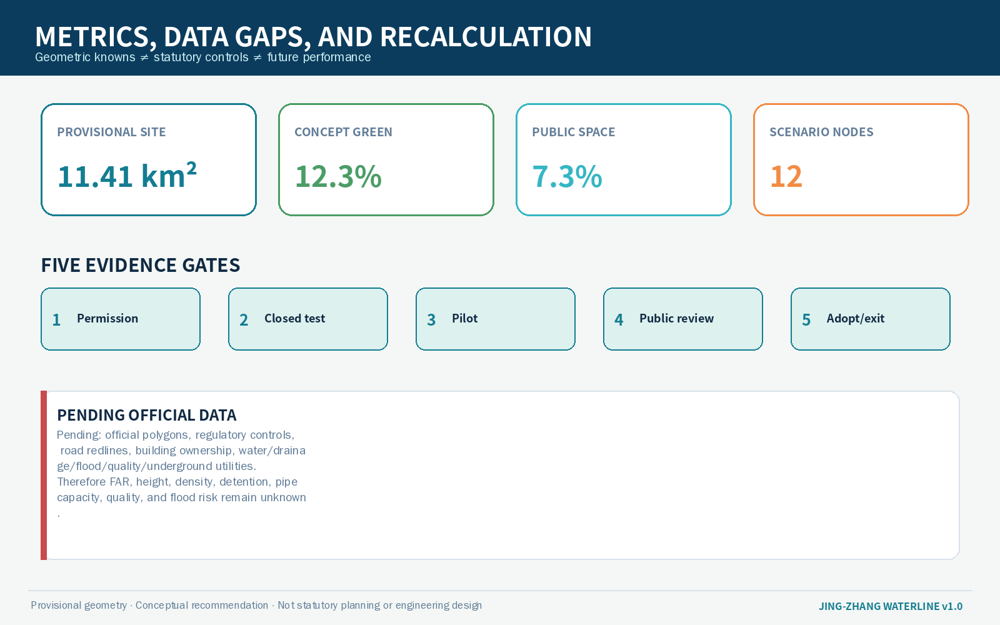

Master Concept and Overview Map

Three Scopes and Land-use Structure

The provisional boundary is deliberately de-emphasised; conceptual land-use layers do not alter statutory land use.
Three Key Areas

Walking, Mobility, and Blue-Green Public Space

Core Metrics
Renewal Projects / 更新项目
P1–P2 Evidence + prototype
Baseline survey and a 90-day demountable Origin Rain Court.
P3–P4 Validate + adopt
Three controlled Zhongzhiyuan tests and a Dazhongsi public ledger.
P5–P8 Interface + operations
Professional gate design, open components, public ledger, and Open Week.
Twelve AI Scenario Cards / AI 场景
- W01Drinking-water access navigation
- W02Cool-path guidance
- W03Accessible wet-weather mode
- W04Rain-garden maintenance assistant
- W05Leakage-anomaly sandbox
- W06Wet-surface robot loop
- W07Public water ledger
- W08Tree-watering work orders
- W09Event rain-mode scheduling
- W10Children’s rainwater class
- W11Multilingual human-help desk
- W12Retired-device materials library
W04–W06 are industry tests requiring closed/controlled space, human review, and emergency stop.
Metrics and Evidence Chain

Task Coverage
Announcement 1.3/1.4/1.5 and Agent 1–6 are mapped to narrative, geometry, metrics, drawings, and this page.
Sources
Formal tasks derive from the official announcement and repository package; six global cases are background research only. See sources.json for URLs, licences, and limitations.
Assumptions
Official polygons, controls, roads, ownership, water/drainage/flood/quality/underground utilities remain pending. Nodes require field relocation.
Self-check Status
Four-gate self-check passed: deterministic, spatial, visual-packaging, and professional-evidence gates are all PASS. Recalculate the package after official polygons arrive.